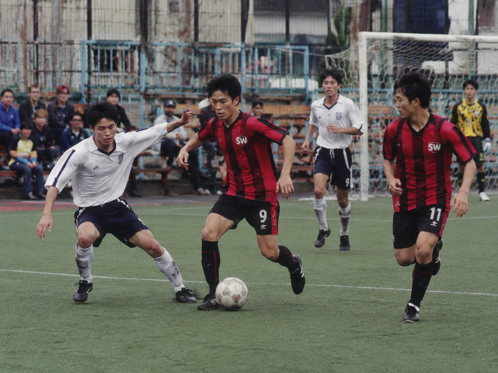
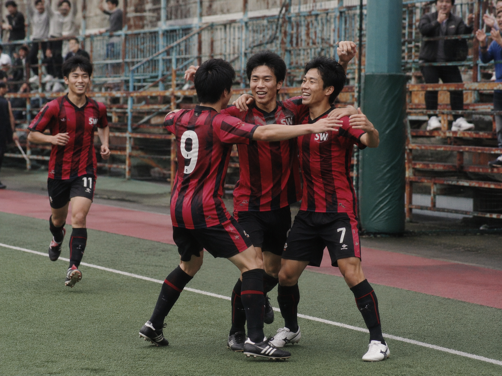
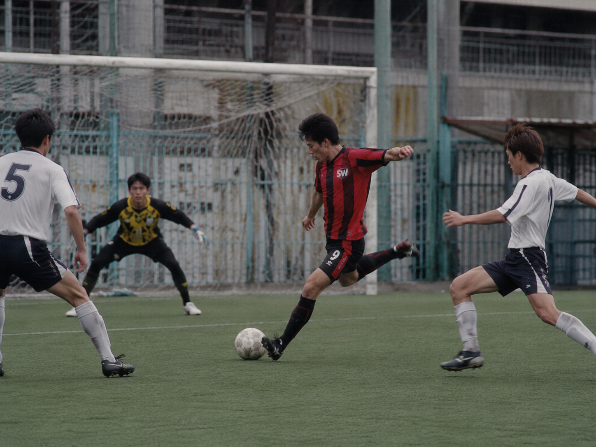
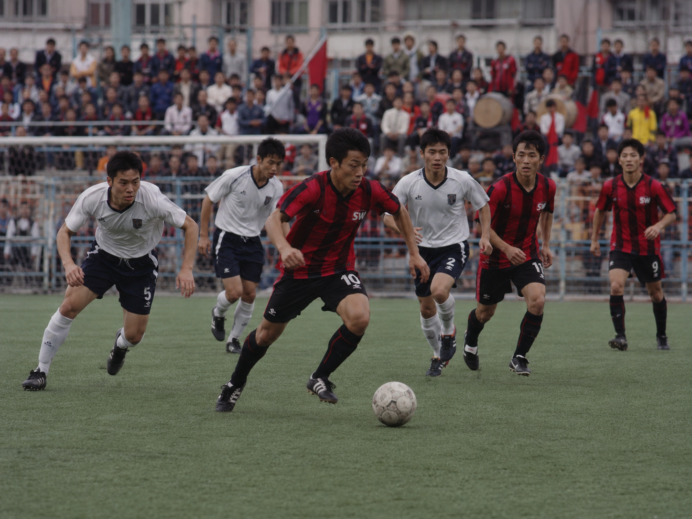
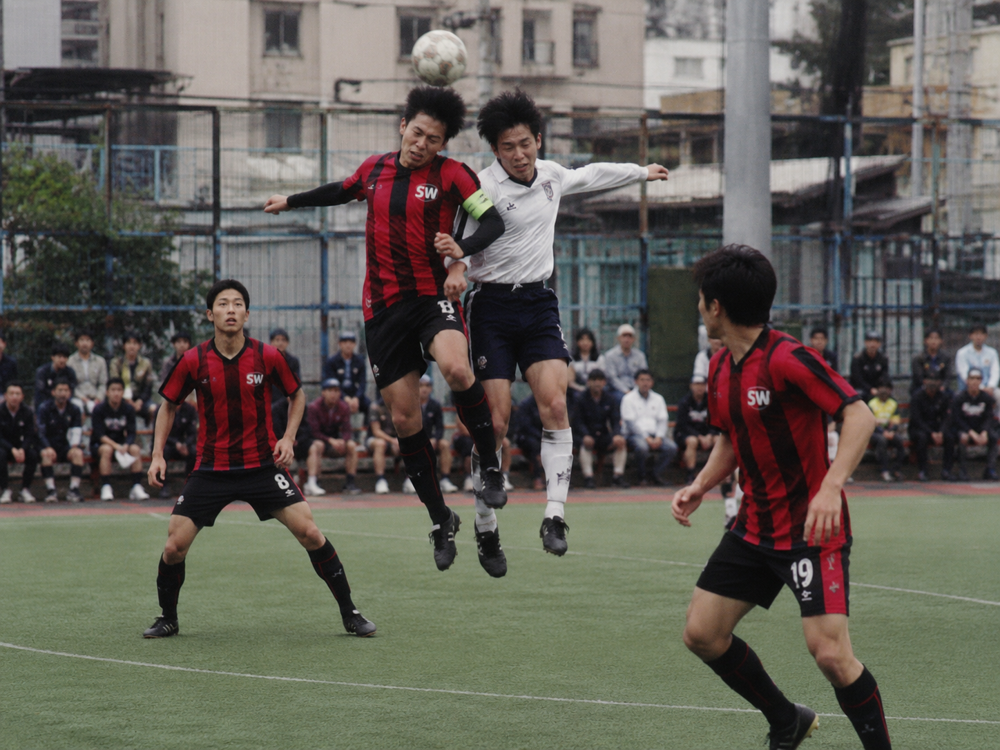
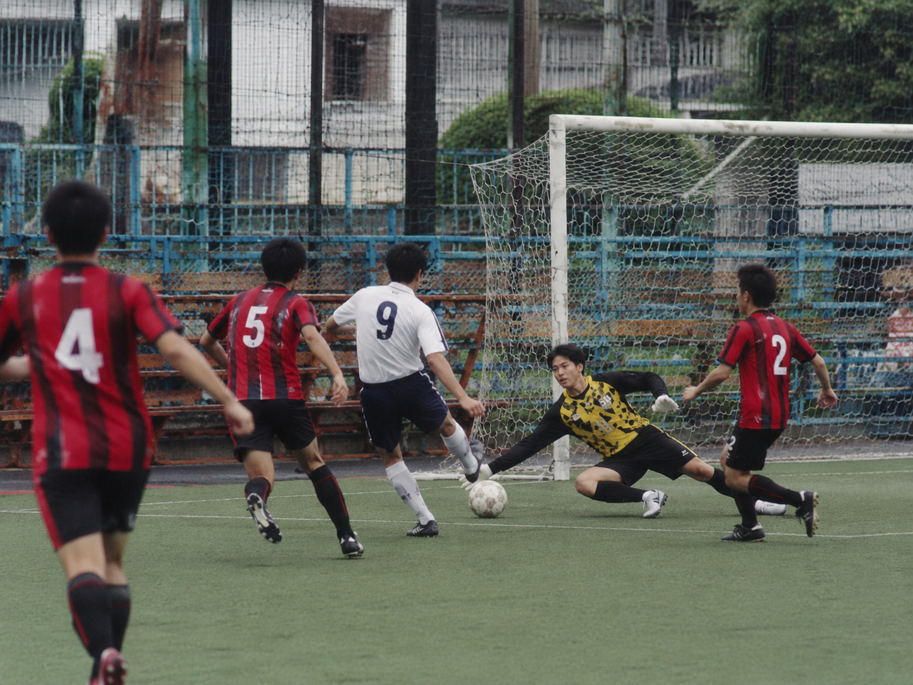

九八年五月九日（星期六）聲威將會出戰總會盃足球賽，賽事以分組單循環進行，是日聲威首次出戰力爭佳績。
On Saturday 9 May 1998, Sing Wai were scheduled to play in the General Cup. The competition used a group round-robin format, and this was Sing Wai’s first appearance in the tournament.
Part 2 / 近況
跟返原本近況頁：每個比賽項目下面放返相應比賽詳情同出賽陣容。
Old club news grouped by competition, with each match report and line-up restored inside its own section.
九八年五月九日
九八年五月九日（星期六）聲威將會出戰總會盃足球賽，賽事以分組單循環進行，是日聲威首次出戰力爭佳績。
On Saturday 9 May 1998, Sing Wai were scheduled to play in the General Cup. The competition used a group round-robin format, and this was Sing Wai’s first appearance in the tournament.

總會盃首圈賽事實況圖：聲威力戰 4 比 4 亦發。
General Cup first-round action: Sing Wai battled to a 4–4 draw with Yik Fat.
對手為「亦發」，聲威從未與對方交手，唯對方有多名勁人在陣，實力有目共睹，而聲威有數名主力或傷或因特別理由而未能出戰。另外，聲威眾將因前一晚及開波前五個鐘亦有操練及比賽，在各將身心俱疲之下亦不存勝望，但求盡力而為，唯聲威亦能力戰迫和對手４比４，此成績已有所交待。
The opponent was ‘Yik Fat’, a team Sing Wai had never faced before. They had several strong players, while Sing Wai were missing a number of regulars through injury or other reasons. The team had also trained or played the night before and again five hours before kick-off. With everyone exhausted, Sing Wai did not expect to win, but fought hard and drew 4–4, which was already a respectable result.
賽事簡評：由於有多名主將缺陣，聲威只能以殘陣應戰，亦由於眾將征戰頻頻，致令對方有大部份時間控球在腳，聲威只能以穩守突擊與對方抗衡。接戰初段聲威完全處於被動，捱到上半場中段終於失手，當時對方喺左手邊得一個界外球，手榴彈戰術將球擲去遠柱，因阿水回防未及致令對方輕鬆射入，聲威落後０比１。聲威落後下亦開始反擊，唯子凌、阿水及阿榮嘅射門俱在柱邊出界。及後聲威係後防疏忽之下再失一球，對方左後衛大腳吊前，防守主將指藍與門將阿明誤會下被對方前鋒快腳射入，聲威落後０比２。
Match review: with many key players absent and the team tired from repeated matches, Sing Wai spent much of the game without the ball and relied on solid defending and counter-attacks. Early on, they were under pressure and conceded from a long-throw routine to the far post when Ah Shui could not get back in time. Sing Wai then tried to respond, but chances from Tsz Ling, Ah Shui and Ah Wing went narrowly wide. A defensive misunderstanding between Chi Lam and goalkeeper Ah Ming then allowed the opponent to score again, making it 0–2.
及後聲威憑一次美妙嘅組織拉近比數，當時聲威前鋒阿水喺右手邊傳交中路嘅子凌，子凌跟住直線送前俾突破對方越位陷阱嘅阿水，輕易過埋對方龍門射入，追成１比２接近比數。上半場亦以此比數結束。
Sing Wai pulled one back with a fine move: Ah Shui passed from the right to Tsz Ling in the middle, who immediately slipped a through ball back to Ah Shui. Ah Shui beat the offside trap, rounded the goalkeeper and scored to make it 1–2. The first half ended with that score.
In the second half, Ah Sing, Ah Pat and Ah Keung came on for Ah Ming, Ah Shui and Ah Wing. Sing Wai began to create more chances, but shots by Ah Wing and Tsz Ling were blocked. The opponent then scored with a lob after a defensive clearance, making it 1–3. Sing Wai fought back: Ah Keung played a diagonal pass from the right to an unmarked Tsz Ling, who finished to the far post for 2–3. Four minutes later, Ah Keung and Tsz Ling combined again; Tsz Ling controlled with his back to goal, turned past the defender and fired into the far corner to make it 3–3.
聲威來勢洶洶大有後來居上之勢，子凌施射自由球惜中柱彈出，未能使聲威領先，而對方完場前兩分鐘憑一次美妙嘅組織再度領先，對方前鋒後腳撥橫俾另外一個球員快腳勁射喺聲威門將阿聲手頂入網，聲威再度落後，３比４。完場前聲威喺中圈得一個罰球，指藍吊前給子凌，子凌推橫避過對方後衛，趁對方門將出迎之際右腳快射入網，大演帽子戲法，聲威戲劇性地扳平，４比４。補時階段聲威一次反擊三個對對方一個後衛，唯球證喺此刻吹長雞完場，聲威未能趁勢反勝，結果聲威力併之下迫和對手４比４。
Sing Wai then looked capable of completing the comeback. Tsz Ling hit the post from a free kick, but with two minutes left the opponent scored again through a clever move and a quick shot that went in off goalkeeper Ah Sing’s hand, making it 3–4. Near full-time, Sing Wai won a free kick near the centre circle. Chi Lam sent it forward to Tsz Ling, who shifted the ball past a defender and shot quickly with his right foot as the goalkeeper came out. It completed his hat-trick and made the final score 4–4. In stoppage time, Sing Wai broke three-on-one, but the referee blew for full time before they could attack again.
聲威出賽陣容：阿明（阿聲），兆榮（阿姜），指藍，阿強，阿水（阿ＰＡＴ），子凌
Sing Wai line-up: Ah Ming (Ah Sing), Siu Wing (Ah Keung), Chi Lam, Ah Keung, Ah Shui (Ah Pat), Tsz Ling
九七年八月
九七年八月三十一日（星期日）參加夏令盃足球賽八強賽事，聲威於這場比賽以全新波衫出戰。
On Sunday 31 August 1997, Sing Wai played in the Summer Cup quarter-final and wore a brand-new kit for the match.
九七年八月十七日（星期日）參加夏令盃足球賽十六強賽事，取勝後喺兩個禮拜後踢八強賽事，如再取勝就要多踢兩場比賽。
On Sunday 17 August 1997, Sing Wai played in the Summer Cup round of 16. A win would send them to the quarter-final two weeks later, and another win after that would mean two more matches.

夏令盃十六強賽事實況圖：聲威 2 比 1 擊敗柏濤，晉級八強。
Summer Cup round-of-16 action: Sing Wai beat Pak To 2–1 to reach the quarter-final.
對手為「柏濤」，聲威以頑強實力以２比１戰勝對手，進級八強。
The opponent was ‘Pak To’. Sing Wai won 2–1 through determination and advanced to the quarter-final.
賽事簡評：上半場雙方都互有攻守，先有聲威龍門阿成擋出對方遠射，及後聲威前鋒兆榮左腳『喎利』揪射柱邊出界。戰至中段，對方後衛傻仔無喇喇係禁區入面犯手球被判罰九碼，由隊長人狼輕易射入，領先１比０。
Match review: both sides attacked in the first half. Sing Wai goalkeeper Ah Shing saved a long shot, and Siu Wing later volleyed just wide with his left foot. Midway through the half, an opponent handled the ball in the box and Sing Wai were awarded a penalty. Captain Yan Long scored easily to make it 1–0.
幾分鐘後對方一次突擊射死角得手追平，雙方１比１完上半場。
A few minutes later, the opponent equalised with a counter-attack into the corner, and the first half ended 1–1.
下半場聲威以阿強入替肥升以加強攻擊力，結果戰術成功，聲威完全壓住對方強攻，而對方只有零星反擊。阿強勁射中柱彈出，人狼遠射柱邊出界，而墮後打左後衛嘅兆榮揪射，可惜全部無功而還。
In the second half, Sing Wai brought on Ah Keung for Fat Sing to strengthen the attack. The change worked: Sing Wai pinned the opponent back, while the opponent only had occasional counters. Ah Keung hit the post, Yan Long shot narrowly wide from distance, and Siu Wing, now deeper at left-back, also had an effort, but none went in.
及後聲威憑一次美妙組織再次領先。人狼係後防中路交去左邊，兆榮推前斜直線地波長傳交俾以右翼姿態助攻嘅指藍，跟住再撥出中間俾子凌，子凌喺對方後衛力壓之下趁對方龍門出迎之際笠入，聲威領先２比１。最後子凌交右俾阿強揪射惜柱邊出界，未能再增添紀錄。結果聲威贏２比１。
Sing Wai then took the lead with a fine move. Yan Long passed from central defence to the left; Siu Wing advanced and played a diagonal ground pass to Chi Lam, who had joined the attack on the right. Chi Lam squared the ball into the middle for Tsz Ling, who, under pressure from a defender, lobbed the ball over the advancing goalkeeper. Sing Wai led 2–1 and held on to win.
聲威出賽陣容：阿成，肥升（阿強），指藍，人狼，兆榮，子凌
Sing Wai line-up: Ah Shing, Fat Sing (Ah Keung), Chi Lam, Yan Long, Siu Wing, Tsz Ling

夏令盃八強賽事實況圖：聲威全新波衫出戰，與對手激戰。
Summer Cup quarter-final action: Sing Wai in their new kit pressing forward in a tense battle.
對手為「閃電豹」，聲威竟出乎意料以０比１敗陣，無緣進級四強，於八強行人止步。
The opponent was ‘Lightning Panther’. Sing Wai unexpectedly lost 0–1 and missed out on the semi-final, exiting at the quarter-final stage.
賽事簡評：由於天氣酷熱，上半場雙方都以求穩陣，未有谷得太上，上半場雙方射門可謂聊聊可數。聲威球員肥升左腳射中網側，而對方嘅浪射亦無甚威脅。上半場喺互有攻守之下以０比０結束。
Match review: because of the extreme heat, both sides played cautiously in the first half and did not push too high. Chances were few. Fat Sing hit the side netting with his left foot, while the opponent’s long shots posed little danger. The first half ended 0–0.
下半場初段聲威加快比賽節奏，開始控制戰局，對方亦縮後佈防，致令聲威球員只有外圍傳球而未能作出太大嘅威脅。肥升左路送前，子凌半單刀狀態下揪射竟然柱邊出界，未能先開紀錄。對方及後喺一次反擊中於左輔住接近底線處窄角度揪入，聲威意外地落後０比１。聲威及後換入阿強同阿ＰＡＴ以收復失地，惜喺久攻之下亦未能扳平，聲威最後以０比１飲恨出局。
Early in the second half, Sing Wai raised the tempo and began to control the match. The opponent dropped deeper, leaving Sing Wai mostly passing around the outside without creating enough danger. Fat Sing played Tsz Ling through down the left, but Tsz Ling, almost one-on-one, shot just wide. The opponent later scored from a counter-attack at a tight angle near the byline, putting Sing Wai behind 0–1. Sing Wai brought on Ah Keung and Ah Pat to chase the game, but could not equalise and were knocked out 0–1.
聲威出賽陣容：阿成，肥升（阿強），指藍，人狼，兆榮（阿ＰＡＴ），子凌
Sing Wai line-up: Ah Shing, Fat Sing (Ah Keung), Chi Lam, Yan Long, Siu Wing (Ah Pat), Tsz Ling
九七年八月二十四日
九七年八月二十四日（星期日）參加區局盃七人賽賽事，參賽球隊共有七隊以單淘汰制爭奪冠軍。
On Sunday 24 August 1997, Sing Wai entered the District Board Cup seven-a-side tournament. Seven teams competed in a single-elimination format for the championship.

區局盃八強賽實況圖：聲威 3 比 0 擊敗烈風，晉級四強。
District Board Cup quarter-final action: Sing Wai beat Lie Fung 3–0 to advance.
聲威嘅對手為「烈風」，以對賽往績計聲威以一勝一和佔優，結果聲威輕取對手３比０，進級四強。
Sing Wai faced ‘Lie Fung’. Based on previous meetings, Sing Wai had the advantage with one win and one draw, and they won comfortably 3–0 to reach the semi-final.
賽事簡評：上半場聲威以較佳嘅合作及技術控制戰局，代替缺陣嘅聲威皇牌子凌嘅外援阿峰首次參戰表現不俗，令對手後防疲於奔命，但礙於對方刻意防守，所以初段無法爭取入球。戰至中段，聲威終於打破缺口，肥升係門前窄角度左腳『喎利』揪入，聲威領先１比０完上半場。
Match review: in the first half, Sing Wai controlled the game with better teamwork and technique. Guest player Ah Fung, replacing the absent star Tsz Ling, performed well and kept the opposing defence busy. Because the opponent defended deep, Sing Wai initially struggled to score. Midway through the half, Fat Sing finally broke through with a left-foot volley from a tight angle, giving Sing Wai a 1–0 half-time lead.
In the second half, the opponent pushed forward to fight back, but Sing Wai’s compact defence held firm. The opponent only created two real threats: one hit the bar and another was saved by goalkeeper Ah Shing. As the opponent pushed players forward and left gaps at the back, Ah Wing scored into the corner from the left channel to make it 2–0. Substitute Ah Pat then finished off a long pass from Chi Lam, sealing a 3–0 win.
聲威出賽陣容：阿成，肥升，指藍，人狼，兆榮，阿峰（阿ＰＡＴ），阿強
Sing Wai line-up: Ah Shing, Fat Sing, Chi Lam, Yan Long, Siu Wing, Ah Fung (Ah Pat), Ah Keung

區局盃四強賽實況圖：聲威以 2 比 0 淘汰海光青年軍。
District Board Cup semi-final action: Sing Wai defeated Hoi Kwong Youth Army 2–0.
聲威面對外隊屯門「海光青年軍」，由於對手長途跋涉遠道而來，聲威憑藉主場之利而佔優，結果聲威以２比０擊敗對手進入決賽。
Sing Wai faced the Tuen Mun side ‘Hoi Kwong Youth Army’. Since the opponent had travelled a long way, Sing Wai made good use of home advantage and won 2–0 to reach the final.
Match review: both sides were cautious in the first half. Sing Wai controlled the tempo with better technique, while the away side did not dare to press too high. Ma Lau started and played well, creating chances and also threatening himself, but the Sing Wai forwards could not find the finishing touch. The first half ended 0–0.
下半場人狼傷出聲威以阿ＰＡＴ入替，聲威亦加快節奏，終於打開紀錄。當時阿峰喺右邊前場接應長傳，於接近底線位置傳中，馬騮伏兵門前一頂入網，聲威領先１：０。對方落後下傾力反撲，曾有一次射門俾聲威門將阿成飛身撲出，另有對方前鋒連過數關後起腳亦俾指藍擋出，始於無法追成平手。及後馬騮單騎推入禁區射向遠柱死角入網，聲威以２：０拉開紀錄，對方亦開始洩氣。聲威亦以此紀錄保持至完場進入決賽。
After half-time, Yan Long went off injured and Ah Pat came on. Sing Wai increased the tempo and finally scored. Ah Fung received a long pass on the right and crossed near the byline; Ma Lau arrived in front of goal and headed in for 1–0. The opponent pushed hard to respond, but one shot was saved by Ah Shing and another run was blocked by Chi Lam. Later, Ma Lau drove into the box alone and shot into the far corner to make it 2–0. Sing Wai kept that score and advanced to the final.
聲威出賽陣容：阿成，肥升，指藍，人狼（阿ＰＡＴ），兆榮，阿峰（阿強），馬騮
Sing Wai line-up: Ah Shing, Fat Sing, Chi Lam, Yan Long (Ah Pat), Siu Wing, Ah Fung (Ah Keung), Ma Lau

區局盃決賽實況圖：聲威與翠楓激戰至十二碼，屈居亞軍。
District Board Cup final action: Sing Wai pushed Chui Fung to penalties before finishing runners-up.
上年嘅翻版，由聲威對死敵「翠楓」，由於對手實力橫強，所以聲威今場以穩守突擊為主，戰術亦頗為成功。今場聲威外援阿峰首次倒戈相向，表現不俗。
The final was a repeat of the previous year: Sing Wai against their rivals ‘Chui Fung’. Because the opponent was very strong, Sing Wai focused on defending solidly and counter-attacking, and the strategy worked well. Guest player Ah Fung, facing his former side, also performed well.
賽事簡評：上半場由於聲威以穩守突擊為主戰術，所以對方控球時間較多，不過聲威後防非常嚴密，對方只能作外圍傳球。相反聲威幾次突擊亦頗具威脅，結果憑一次美妙嘅組織先開紀錄。當時阿強喺前場控定來球，阿強見阿峰走位即刻地波直線俾前，阿峰邊走邊射中遠柱入網，聲威領先１比０。聲威領先後防線有少許鬆懈，對方憑一個機會迅速扳平。上半場以１比１結束。
Match review: because Sing Wai relied on defence and counter-attacks, the opponent had more possession in the first half. However, Sing Wai’s defence was tight, forcing the opponent to pass mostly around the outside. Sing Wai’s counters were dangerous, and one excellent move brought the opening goal: Ah Keung controlled the ball in attack, spotted Ah Fung’s run and played a ground through ball. Ah Fung shot first time and scored off the far post for 1–0. After taking the lead, Sing Wai relaxed slightly and the opponent quickly equalised. The first half ended 1–1.
換邊後聲威以馬騮及阿ＰＡＴ先後入替。下半場雙方都比較謹慎，避免失球亦不敢谷得太前，雙方喺互有攻守之下始終未能增添紀錄，結果以１比１完場要以射九碼球分勝負。聲威派出人狼、馬騮及肥升射頭三輪。對方射先入網，而人狼一射竟然一飛沖天，頭一輪聲威落後０比１。第二輪聲威龍門阿成撲出對方射門，而馬騮亦不負所托射入追成１比１。第三輪對方先射入下聲威一定要射入方有機會取勝，惜肥升一射柱邊出界。結果聲威射九碼輸１比２而屈居亞軍。
After the break, Ma Lau and Ah Pat came on. Both sides were cautious in the second half and did not push too high, trying not to concede. The match ended 1–1 and went to penalties. Sing Wai sent Yan Long, Ma Lau and Fat Sing to take the first three kicks. The opponent scored first, while Yan Long shot high over the bar. In the second round, goalkeeper Ah Shing saved the opponent’s kick and Ma Lau scored to make it 1–1. In the third round, the opponent scored again, meaning Sing Wai had to score to stay alive, but Fat Sing shot just wide. Sing Wai lost the shootout 1–2 and finished as runners-up.
聲威出賽陣容：阿成，肥升，指藍，人狼，兆榮（阿ＰＡＴ），阿強（馬騮），阿峰
Sing Wai line-up: Ah Shing, Fat Sing, Chi Lam, Yan Long, Siu Wing (Ah Pat), Ah Keung (Ma Lau), Ah Fung